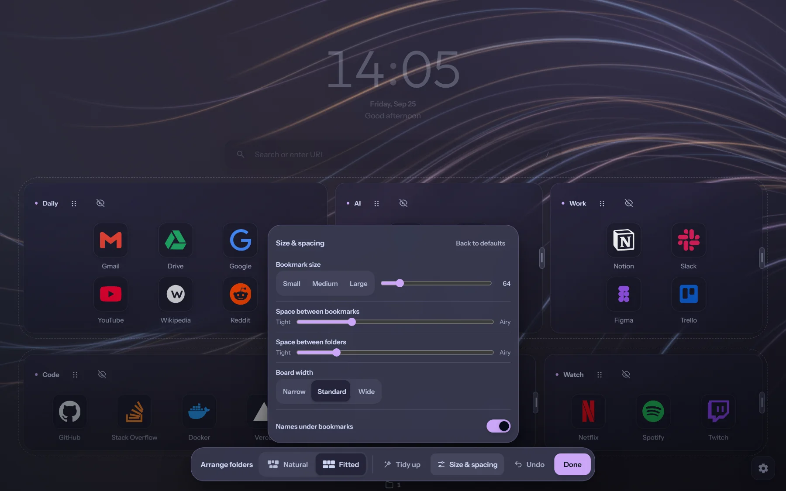

Arrange
Folders go where you put them
Drag a folder between two others, or between rows to start a new one, and the board shows where it will land before you let go. Fitted makes every row run edge to edge.
Bookmark size, spacing and the width of the board are set in one panel, with the board itself as the preview and Undo for every step.
